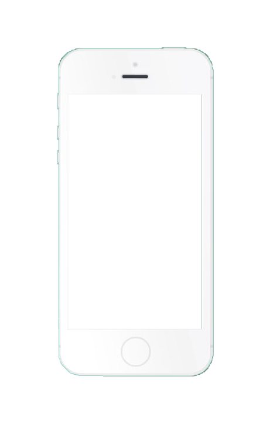
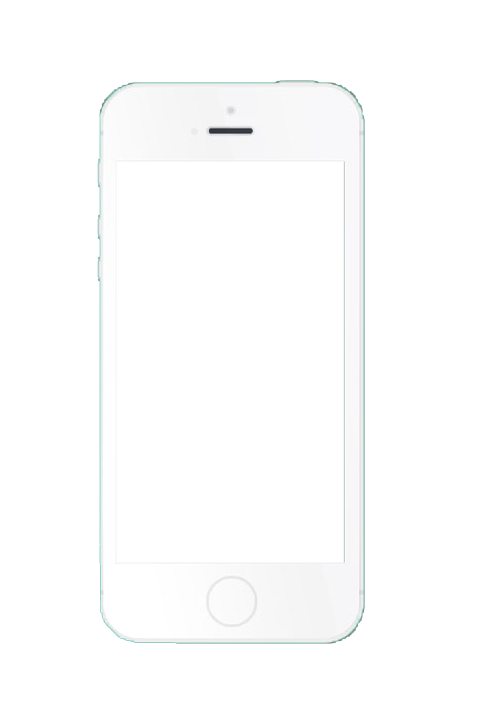

Display Settings
Shown on Screen:
To change the text size, select Text Size and you will open a screen that allows you to change it manually by dragging your finger along the bottom selector—right for larger, left for smaller.
To reach display settings, tap the Settings icon  , and scroll down to the Display & Brightness menu.
Tap on the menu to open it and several options will appear.
, and scroll down to the Display & Brightness menu.
Tap on the menu to open it and several options will appear.
To change the brightness of the screen, drag the symbol in the top blue-and-gray bar right to make it brighter and left to make it darker.
To toggle True Tone (which changes the colors of the screen), Raise to Wake (which activates the phone when you raise it), or Bold Text (which makes text thicker), simply tap on the switch icons  .
Green means activated, while white means unactivated.
.
Green means activated, while white means unactivated.
To turn on Display Zoom, tap on the View menu under the Display Zoom section and you will be taken to another screen where you can toggle Display Zoom and see examples. Tap 'Done' on the top right corner when finished!
 
